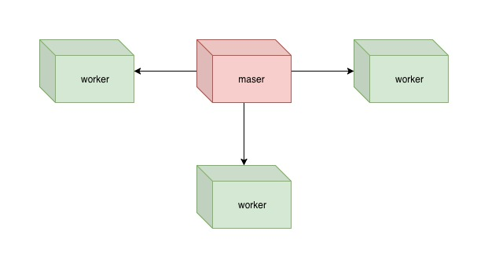

<!DOCTYPE HTML>
<html lang="zh-cn" >
    <head>
        <meta charset="UTF-8">
        <meta content="text/html; charset=utf-8" http-equiv="Content-Type">
        <title>高性能 web server · Python Server Tutorial</title>
        <meta http-equiv="X-UA-Compatible" content="IE=edge" />
        <meta name="description" content="">
        <meta name="generator" content="GitBook 3.2.3">
        <meta name="author" content="三月沙">
        
        
    
    <link rel="stylesheet" href="../gitbook/style.css">

    
            
                
                <link rel="stylesheet" href="../gitbook/gitbook-plugin-page-toc/page-toc.css">
                
            
                
                <link rel="stylesheet" href="../gitbook/gitbook-plugin-search-plus/search.css">
                
            
                
                <link rel="stylesheet" href="../gitbook/gitbook-plugin-tbfed-pagefooter/footer.css">
                
            
                
                <link rel="stylesheet" href="../gitbook/gitbook-plugin-highlight/website.css">
                
            
                
                <link rel="stylesheet" href="../gitbook/gitbook-plugin-fontsettings/website.css">
                
            
        

    

    
        
    
        
    
        
    
        
    
        
    
        
    

        
    
    
    <meta name="HandheldFriendly" content="true"/>
    <meta name="viewport" content="width=device-width, initial-scale=1, user-scalable=no">
    <meta name="apple-mobile-web-app-capable" content="yes">
    <meta name="apple-mobile-web-app-status-bar-style" content="black">
    <link rel="apple-touch-icon-precomposed" sizes="152x152" href="../gitbook/images/apple-touch-icon-precomposed-152.png">
    <link rel="shortcut icon" href="../gitbook/images/favicon.ico" type="image/x-icon">

    
    
    <link rel="prev" href="ch10.html" />
    

    </head>
    <body>
        
<div class="book">
    <div class="book-summary">
        
            
<div id="book-search-input" role="search">
    <input type="text" placeholder="輸入並搜尋" />
</div>

            
                <nav role="navigation">
                


<ul class="summary">
    
    

    

    
        
        
    
        <li class="chapter " data-level="1.1" data-path="../">
            
                <a href="../">
            
                    
                    Introduction
            
                </a>
            

            
        </li>
    
        <li class="chapter " data-level="1.2" data-path="ch00.html">
            
                <a href="ch00.html">
            
                    
                    写在开始之前
            
                </a>
            

            
        </li>
    
        <li class="chapter " data-level="1.3" data-path="ch01.html">
            
                <a href="ch01.html">
            
                    
                    基础概念
            
                </a>
            

            
        </li>
    
        <li class="chapter " data-level="1.4" data-path="ch02.html">
            
                <a href="ch02.html">
            
                    
                    最简单的 Web Server 模型
            
                </a>
            

            
        </li>
    
        <li class="chapter " data-level="1.5" data-path="ch03.html">
            
                <a href="ch03.html">
            
                    
                    多进程模型
            
                </a>
            

            
        </li>
    
        <li class="chapter " data-level="1.6" data-path="ch04.html">
            
                <a href="ch04.html">
            
                    
                    多线程模型
            
                </a>
            

            
        </li>
    
        <li class="chapter " data-level="1.7" data-path="ch05.html">
            
                <a href="ch05.html">
            
                    
                    IO 多路复用技术
            
                </a>
            

            
        </li>
    
        <li class="chapter " data-level="1.8" data-path="ch06.html">
            
                <a href="ch06.html">
            
                    
                    IO 多路复用之 poll
            
                </a>
            

            
        </li>
    
        <li class="chapter " data-level="1.9" data-path="ch07.html">
            
                <a href="ch07.html">
            
                    
                    IO 多路复用之 select
            
                </a>
            

            
        </li>
    
        <li class="chapter " data-level="1.10" data-path="ch08.html">
            
                <a href="ch08.html">
            
                    
                    IO 多路复用之 epoll
            
                </a>
            

            
        </li>
    
        <li class="chapter " data-level="1.11" data-path="ch09.html">
            
                <a href="ch09.html">
            
                    
                    select、poll、epoll 如何选择
            
                </a>
            

            
        </li>
    
        <li class="chapter " data-level="1.12" data-path="ch10.html">
            
                <a href="ch10.html">
            
                    
                    C10k 问题
            
                </a>
            

            
        </li>
    
        <li class="chapter active" data-level="1.13" data-path="ch11.html">
            
                <a href="ch11.html">
            
                    
                    高性能 web server
            
                </a>
            

            
        </li>
    

    

    <li class="divider"></li>

    <li>
        <a href="https://www.gitbook.com" target="blank" class="gitbook-link">
            本書使用 GitBook 釋出
        </a>
    </li>
</ul>


                </nav>
            
        
    </div>

    <div class="book-body">
        
            <div class="body-inner">
                
                    

<div class="book-header" role="navigation">
    

    <!-- Title -->
    <h1>
        <i class="fa fa-circle-o-notch fa-spin"></i>
        <a href=".." >高性能 web server</a>
    </h1>
</div>


                    <div class="page-wrapper" tabindex="-1" role="main">
                        <div class="page-inner">
                            
<div class="search-plus" id="book-search-results">
    <div class="search-noresults">
    
                                <section class="normal markdown-section">
                                
                                <h2 id="11-&#x9AD8;&#x6027;&#x80FD;-web-server">11. &#x9AD8;&#x6027;&#x80FD; web server</h2>
<p>&#x5728;&#x524D;&#x9762;&#x7684;&#x6587;&#x7AE0;&#x4E2D;&#xFF0C;&#x6211;&#x4EEC;&#x5148;&#x540E;&#x4ECB;&#x7ECD;&#x4E86;&#xFF1A;</p>
<ul>
<li>&#x5355;&#x8FDB;&#x7A0B;&#x6A21;&#x578B;</li>
<li>&#x591A;&#x8FDB;&#x7A0B;&#x6A21;&#x578B;</li>
<li>&#x591A;&#x7EBF;&#x7A0B;&#x6A21;&#x578B;</li>
<li>IO &#x591A;&#x8DEF;&#x590D;&#x7528;&#x6280;&#x672F;</li>
</ul>
<p>&#x6BCF;&#x79CD;&#x6A21;&#x578B;&#x90FD;&#x6709;&#x81EA;&#x8EAB;&#x7684;&#x4F18;&#x7F3A;&#x70B9;&#xFF0C;&#x90FD;&#x6709;&#x81EA;&#x5DF1;&#x7684;&#x9002;&#x7528;&#x573A;&#x666F;&#xFF0C;&#x6BD4;&#x5982;&#x5355;&#x8FDB;&#x7A0B;&#x6A21;&#x578B;&#x4E00;&#x822C;&#x4EC5;&#x4EC5;&#x5728;&#x5F00;&#x53D1;&#x6D4B;&#x8BD5;&#x4E2D;&#x4F7F;&#x7528;&#xFF0C;&#x591A;&#x8FDB;&#x7A0B;&#x548C;&#x591A;&#x7EBF;&#x7A0B;&#x6A21;&#x578B;&#x4F1A;&#x7528;&#x5728;&#x5E76;&#x53D1;&#x8BF7;&#x6C42;&#x4E0D;&#x662F;&#x5F88;&#x591A;&#x7684;&#x573A;&#x666F;&#x4E0B;&#xFF0C;&#x6BD4;&#x5982;&#x5185;&#x90E8;&#x7CFB;&#x7EDF;&#xFF0C;&#x6570;&#x636E;&#x5E93;&#x7CFB;&#x7EDF;&#x7B49;&#xFF0C;IO &#x591A;&#x8DEF;&#x590D;&#x7528;&#x6280;&#x672F;&#x5219;&#x5728;&#x5F88;&#x591A;&#x9AD8;&#x6027;&#x80FD; Web Server &#x4E2D;&#x53D1;&#x6325;&#x7740;&#x91CD;&#x8981;&#x4F5C;&#x7528;&#xFF0C;&#x6BD4;&#x5982;&#x6211;&#x4EEC;&#x5E38;&#x89C1;&#x7684; nginx&#x3002;</p>
<p>&#x90A3;&#x5982;&#x4F55;&#x8861;&#x91CF;&#x4E00;&#x4E2A; Web Server &#x662F;&#x9AD8;&#x6027;&#x80FD;&#x7684;&#xFF0C;&#x53C8;&#x5982;&#x4F55;&#x8BBE;&#x8BA1;&#x51FA;&#x9AD8;&#x6027;&#x80FD;&#x7684; Web Server&#xFF1F;</p>
<h3 id="111-&#x9AD8;&#x6027;&#x80FD;-web-server-&#x7684;&#x8861;&#x91CF;&#x6307;&#x6807;">11.1 &#x9AD8;&#x6027;&#x80FD; Web Server &#x7684;&#x8861;&#x91CF;&#x6307;&#x6807;</h3>
<p>&#x53EF;&#x91CF;&#x5316;&#x662F;&#x8861;&#x91CF;&#x6027;&#x80FD;&#x7684;&#x4E00;&#x79CD;&#x91CD;&#x8981;&#x65B9;&#x5F0F;&#xFF0C;&#x5BF9;&#x4E8E;&#x9AD8;&#x6027;&#x80FD;&#x7684; Web Server &#x53EF;&#x4EE5;&#x4ECE;&#x4EE5;&#x4E0B;&#x51E0;&#x4E2A;&#x6307;&#x6807;&#x5165;&#x624B;&#xFF1A;</p>
<ul>
<li>&#x6700;&#x5927;&#x5E76;&#x53D1;&#x8FDE;&#x63A5;&#x6570;</li>
<li>&#x54CD;&#x5E94;&#x65F6;&#x95F4;</li>
<li>&#x541E;&#x5410;&#x91CF;</li>
</ul>
<p><strong>&#x541E;&#x5410;&#x91CF; = &#x6700;&#x5927;&#x5E76;&#x53D1;&#x8FDE;&#x63A5;&#x6570;/&#x54CD;&#x5E94;&#x65F6;&#x95F4;</strong>&#xFF0C;&#x6240;&#x4EE5;&#x63D0;&#x9AD8;&#x4E00;&#x4E2A; Web Server &#x7684;&#x6027;&#x80FD;&#x5C31;&#x662F;&#x4E0D;&#x65AD;&#x63D0;&#x9AD8;&#x8FD9;&#x4E9B;&#x6307;&#x6807;&#xFF0C;&#x4F46;&#x662F;&#x8981;&#x63D0;&#x9AD8;&#x8FD9;&#x4E9B;&#x6307;&#x6807;&#x6709;&#x4E00;&#x4E2A;&#x975E;&#x5E38;&#x91CD;&#x8981;&#x7684;&#x524D;&#x7F6E;&#x6761;&#x4EF6;&#xFF0C;&#x5C31;&#x662F;&#x4E0D;&#x80FD;&#x9760;&#x5355;&#x7EAF;&#x63D0;&#x9AD8;&#x786C;&#x4EF6;&#x7684;&#x6027;&#x80FD;&#x6765;&#x8FBE;&#x5230;&#x9AD8;&#x6027;&#x80FD;&#x7684;&#x8981;&#x6C42;&#xFF0C;&#x800C;&#x662F;&#x5728;&#x903C;&#x8FD1;&#x786C;&#x4EF6;&#x6027;&#x80FD;&#x6781;&#x9650;&#x7684;&#x6761;&#x4EF6;&#x4E0B;&#x901A;&#x8FC7;&#x4E0D;&#x65AD;&#x4F18;&#x5316;&#x8F6F;&#x4EF6;&#x6765;&#x5B9E;&#x73B0;&#x9AD8;&#x6027;&#x80FD;&#x7684; Web Server&#x3002;</p>
<h3 id="112-&#x9AD8;&#x6027;&#x80FD;&#x7684;-web-server-&#x6A21;&#x578B;">11.2 &#x9AD8;&#x6027;&#x80FD;&#x7684; web server &#x6A21;&#x578B;</h3>
<p>&#x4ECE;&#x5355;&#x8FDB;&#x7A0B;&#x6A21;&#x578B;&#x5230; IO &#x591A;&#x8DEF;&#x590D;&#x7528;&#x6280;&#x672F;&#xFF0C;&#x6BCF;&#x79CD;&#x6A21;&#x578B;&#x90FD;&#x6709;&#x5176;&#x81EA;&#x8EAB;&#x7684;&#x7279;&#x70B9;&#xFF1A;</p>
<ul>
<li>&#x5355;&#x8FDB;&#x7A0B;&#x6A21;&#x578B;&#x5B9E;&#x73B0;&#x7B80;&#x5355;&#xFF0C;&#x9002;&#x7528;&#x573A;&#x666F;&#x975E;&#x5E38;&#x6709;&#x9650;</li>
<li>&#x591A;&#x8FDB;&#x7A0B;&#x6A21;&#x578B;&#x6709;&#x4E00;&#x5B9A;&#x7684;&#x5E76;&#x53D1;&#x80FD;&#x529B;&#xFF0C;&#x5B9E;&#x73B0;&#x7B80;&#x5355;&#xFF0C;&#x4F46;&#x662F;&#x6570;&#x636E;&#x5171;&#x4EAB;&#x5F88;&#x9EBB;&#x70E6;</li>
<li>&#x591A;&#x7EBF;&#x7A0B;&#x6A21;&#x578B;&#x6709;&#x4E00;&#x5B9A;&#x7684;&#x5E76;&#x53D1;&#x80FD;&#x529B;&#xFF0C;&#x6570;&#x636E;&#x5171;&#x4EAB;&#x6BD4;&#x8F83;&#x7B80;&#x5355;&#xFF0C;&#x4F46;&#x662F;&#x4F1A;&#x5F15;&#x5165;&#x9501;&#x673A;
&#x5236;&#xFF0C;&#x5B9E;&#x73B0;&#x7A0D;&#x5FAE;&#x590D;&#x6742;&#xFF0C;</li>
<li>IO &#x591A;&#x8DEF;&#x590D;&#x7528;&#x6280;&#x672F;&#x53EF;&#x4EE5;&#x6709;&#x6548;&#x89E3;&#x51B3; IO &#x7B49;&#x5F85;&#x7684;&#x95EE;&#x9898;&#xFF0C;&#x4F46;&#x662F;&#x8981;&#x5229;&#x7528;&#x591A;&#x6838;&#x4F18;&#x52BF;&#x8FD8;&#x9700;&#x8981;&#x591A;&#x8FDB;&#x7A0B;&#x6216;&#x591A;&#x7EBF;&#x7A0B;&#x3002;</li>
</ul>
<p>&#x6240;&#x4EE5;&#x73B0;&#x5B9E;&#x4E2D; web server &#x7684;&#x5B9E;&#x73B0;&#x90FD;&#x662F;&#x8FD9;&#x51E0;&#x79CD;&#x6A21;&#x578B;&#x7684;&#x7EFC;&#x5408;&#x5E94;&#x7528;&#xFF0C;&#x7EC4;&#x5408;&#x8D77;&#x6765;&#x4E00;&#x822C;&#x5305;&#x62EC;&#xFF1A;</p>
<ol>
<li>&#x5355;&#x7EBF;&#x7A0B; IO &#x591A;&#x8DEF;&#x590D;&#x7528;&#x6280;&#x672F; + &#x5355;&#x8FDB;&#x7A0B;(&#x5355;&#x8FDB;&#x7A0B;&#x6A21;&#x578B;)</li>
<li>&#x5355;&#x7EBF;&#x7A0B; IO &#x591A;&#x8DEF;&#x590D;&#x7528;&#x6280;&#x672F; + &#x591A;&#x7EBF;&#x7A0B;(&#x5355;&#x8FDB;&#x7A0B;&#x591A;&#x7EBF;&#x7A0B;)</li>
<li>&#x591A;&#x7EBF;&#x7A0B;/&#x591A;&#x8FDB;&#x7A0B; IO &#x591A;&#x8DEF;&#x590D;&#x7528;&#x6280;&#x672F; + &#x591A;&#x8FDB;&#x7A0B;/&#x591A;&#x7EBF;&#x7A0B;(&#x591A;&#x8FDB;&#x7A0B;&#x6216;&#x591A;&#x8FDB;&#x7A0B;&#x591A;&#x7EBF;&#x7A0B;&#x6A21;&#x578B;)</li>
<li>&#x591A;&#x7EBF;&#x7A0B;/&#x591A;&#x8FDB;&#x7A0B; + &#x5F02;&#x6B65; IO </li>
</ol>
<p>&#x4E0D;&#x8BBA;&#x662F;&#x91C7;&#x7528;&#x54EA;&#x79CD;&#x6A21;&#x578B;&#x8BE6;&#x7EC6;&#x5904;&#x7406;&#x6D41;&#x7A0B;&#x5927;&#x81F4;&#x5982;&#x4E0B;&#xFF1A;</p>
<p></p>
<p>&#x4E0D;&#x540C;&#x6A21;&#x578B;&#x7684;&#x5DEE;&#x5F02;&#x5728;&#x4E8E; accept &#x64CD;&#x4F5C;&#x3001;business process&#x3001;IO &#x64CD;&#x4F5C;&#x662F;&#x5355;&#x4E2A;&#x7EBF;&#x7A0B;&#x5B8C;&#x6210;&#x8FD8;&#x662F;&#x591A;&#x4E2A;&#x7EBF;&#x7A0B;&#x6216;&#x591A;&#x4E2A;&#x8FDB;&#x7A0B;&#x5B8C;&#x6210;&#x3002;</p>
<p><strong>&#x5355;&#x7EBF;&#x7A0B; IO &#x591A;&#x8DEF;&#x590D;&#x7528;&#x6280;&#x672F; + &#x5355;&#x8FDB;&#x7A0B;(&#x5355;&#x8FDB;&#x7A0B;&#x6A21;&#x578B;)</strong></p>
<p>&#x8FD9;&#x79CD;&#x6A21;&#x578B;&#x4E2D;&#xFF0C;accept &#x64CD;&#x4F5C;&#x3001;&#x4E1A;&#x52A1;&#x903B;&#x8F91;&#x5904;&#x7406;&#x3001;IO &#x5904;&#x7406;&#x90FD;&#x662F;&#x5728;&#x4E00;&#x4E2A;&#x8FDB;&#x7A0B;&#x4E2D;&#x5355;&#x7EBF;&#x7A0B;&#x4E0B;&#x5904;&#x7406;&#x5B8C;&#x6210;&#xFF0C;&#x5178;&#x578B;&#x5982; tornado&#x3001;redis&#x3002;</p>
<p><strong>&#x5355;&#x7EBF;&#x7A0B; IO &#x591A;&#x8DEF;&#x590D;&#x7528;&#x6280;&#x672F; + &#x591A;&#x7EBF;&#x7A0B;(&#x5355;&#x8FDB;&#x7A0B;&#x591A;&#x7EBF;&#x7A0B;)</strong></p>
<p>&#x8FD9;&#x79CD;&#x6A21;&#x578B;&#x4E2D;&#xFF0C;accept &#x64CD;&#x4F5C;&#x662F;&#x5355;&#x72EC;&#x7684;&#x7EBF;&#x7A0B;&#xFF0C;IO&#x4EE5;&#x53CA;&#x4E1A;&#x52A1;&#x903B;&#x8F91;&#x5904;&#x7406;&#x6309;&#x7167;&#x4E0D;&#x540C;&#x573A;&#x666F;&#x9700;&#x6C42;&#x5206;&#x522B;&#x4EA4;&#x7ED9;&#x5355;&#x72EC;&#x7684;&#x7EBF;&#x7A0B;&#x6216;&#x540C;&#x4E00;&#x4E2A;&#x7EBF;&#x7A0B;&#x6765;&#x5904;&#x7406;&#xFF0C;&#x5178;&#x578B;&#x5982; gunicorn &#x652F;&#x6301;&#x5355;&#x8FDB;&#x7A0B;&#x591A;&#x7EBF;&#x7A0B;&#x3002;</p>
<p><strong>&#x591A;&#x7EBF;&#x7A0B;/&#x591A;&#x8FDB;&#x7A0B; IO &#x591A;&#x8DEF;&#x590D;&#x7528;&#x6280;&#x672F; + &#x591A;&#x8FDB;&#x7A0B;/&#x591A;&#x7EBF;&#x7A0B;</strong></p>
<p>&#x8FD9;&#x79CD;&#x6A21;&#x578B;&#x4E2D;&#xFF0C;accept &#x64CD;&#x4F5C;&#x662F;&#x591A;&#x4E2A;&#x7684;&#x7EBF;&#x7A0B;&#x6216;&#x8FDB;&#x7A0B;&#x5B9E;&#x73B0;&#xFF0C;IO&#x4EE5;&#x53CA;&#x4E1A;&#x52A1;&#x903B;&#x8F91;&#x5904;&#x7406;&#x4E5F;&#x662F;&#x7531;&#x591A;&#x4E2A;&#x7EBF;&#x7A0B;&#x5B8C;&#x6210;&#x6216;&#x8FDB;&#x7A0B;&#x5B8C;&#x6210;&#xFF0C;&#x5178;&#x578B;&#x5982; nginx &#x591A;&#x8FDB;&#x7A0B;&#xFF0C;&#x6BCF;&#x4E2A;&#x8FDB;&#x7A0B;&#x90FD;&#x6709;&#x81EA;&#x5DF1;&#x7684; accept</p>
<p><strong>&#x591A;&#x7EBF;&#x7A0B;/&#x591A;&#x8FDB;&#x7A0B; + &#x5F02;&#x6B65; IO</strong></p>
<p>linux &#x4E2D;&#x771F;&#x6B63;&#x7684;&#x5F02;&#x6B65; IO &#x5B9E;&#x73B0;&#x7528;&#x7684;&#x8FD8;&#x6BD4;&#x8F83;&#x5C11;&#xFF0C;&#x5728;&#x6B64;&#x6211;&#x4EEC;&#x4E0D;&#x505A;&#x6DF1;&#x5165;&#x4ECB;&#x7ECD;&#xFF0C;&#x611F;&#x5174;&#x8DA3;&#x7684;&#x8BFB;&#x8005;&#x53EF;&#x4EE5;&#x770B;&#x770B; Windows &#x5E73;&#x53F0;&#x7684;&#x5F02;&#x6B65; IO &#x5B9E;&#x73B0; <a href="https://docs.microsoft.com/en-us/windows/desktop/fileio/i-o-completion-ports" target="_blank">https://docs.microsoft.com/en-us/windows/desktop/fileio/i-o-completion-ports</a></p>
<h3 id="113-&#x9AD8;&#x6027;&#x80FD;-web-server-&#x7684;&#x5B9E;&#x73B0;&#x539F;&#x5219;">11.3 &#x9AD8;&#x6027;&#x80FD; web server &#x7684;&#x5B9E;&#x73B0;&#x539F;&#x5219;</h3>
<p>&#x867D;&#x7136;&#x73B0;&#x5728;&#x5F00;&#x6E90;&#x5B9E;&#x73B0;&#x4E2D;&#x5404;&#x79CD; web server &#x7EC6;&#x8282;&#x5DEE;&#x5F02;&#x975E;&#x5E38;&#x5927;&#xFF0C;&#x4F46;&#x603B;&#x4F53;&#x6765;&#x8BF4;&#x6240;&#x6709;&#x7684; web server &#x5728;&#x5B9E;&#x73B0;&#x9AD8;&#x6027;&#x80FD;&#x8981;&#x6C42;&#x65F6;&#x90FD;&#x9075;&#x5B88;&#x7C7B;&#x4F3C;&#x7684;&#x539F;&#x5219;&#xFF1A;</p>
<ul>
<li>&#x5C3D;&#x91CF;&#x907F;&#x514D;&#x6570;&#x636E;&#x62F7;&#x8D1D;(Zero Copy)</li>
<li>&#x5C3D;&#x91CF;&#x907F;&#x514D;&#x4E0A;&#x4E0B;&#x6587;&#x5207;&#x6362;(Context Switchs&#xFF09;</li>
<li>&#x5C3D;&#x91CF;&#x51CF;&#x5C11;&#x5185;&#x5B58;&#x5206;&#x914D;&#x6B21;&#x6570;(Memory Allocation)</li>
<li>&#x5C3D;&#x91CF;&#x51CF;&#x5C11;&#x9501;&#x7684;&#x4F7F;&#x7528;(Lock)</li>
</ul>
<p><strong>Zero Copy</strong></p>
<p>&#x6CA1;&#x6709;&#x6570;&#x636E;&#x62F7;&#x8D1D;&#x7684; web server &#x51E0;&#x4E4E;&#x662F;&#x4E0D;&#x53EF;&#x80FD;&#x5B9E;&#x73B0;&#x7684;&#xFF0C;&#x4EE3;&#x7801;&#x590D;&#x6742;&#x5EA6;&#x9AD8;&#xFF0C;&#x800C;&#x4E14;&#x5F88;&#x96BE;&#x7ECF;&#x5F97;&#x8D77;&#x771F;&#x5B9E;&#x573A;&#x666F;&#x7684;&#x8003;&#x9A8C;&#xFF0C;&#x5373;&#x4F7F;&#x5E94;&#x7528;&#x7A0B;&#x5E8F;&#x80FD;&#x591F;&#x505A;&#x5230;&#x4E0D;&#x62F7;&#x8D1D;&#x6570;&#x636E;&#xFF0C;&#x4F46;&#x662F;&#x5185;&#x6838;&#x4E5F;&#x9700;&#x8981;&#x4ECE;&#x7F51;&#x7EDC;&#x4E2D;&#x62F7;&#x8D1D;&#x6570;&#x636E;&#x3002;&#x65E2;&#x7136;&#x7406;&#x60F3;&#x7684;&#x72B6;&#x6001;&#x96BE;&#x4EE5;&#x8FBE;&#x5230;&#xFF0C;&#x6211;&#x4EEC;&#x53EF;&#x4EE5;&#x6298;&#x4E2D;&#x5B9E;&#x73B0;&#xFF1A;&#x5C3D;&#x91CF;&#x907F;&#x514D;&#x5927;&#x5BF9;&#x8C61;&#x7684;&#x62F7;&#x8D1D;&#x3002;</p>
<p><strong>Context Switchs</strong></p>
<p>&#x5728; linux &#x7CFB;&#x7EDF;&#x4E2D;&#xFF0C;&#x5982;&#x679C; web server &#x8FDB;&#x7A0B;&#x8FC7;&#x591A;&#x6216;&#x7EBF;&#x7A0B;&#x8FC7;&#x591A;&#x90FD;&#x4F1A;&#x9020;&#x6210;&#x7CFB;&#x7EDF;&#x5728;&#x5904;&#x7406;&#x8BF7;&#x6C42;&#x65F6;&#x9700;&#x8981;&#x9891;&#x7E41;&#x8FDB;&#x884C;&#x4E0A;&#x4E0B;&#x6587;&#x5207;&#x6362;&#xFF0C;&#x56E0;&#x800C;&#x4E00;&#x4E2A;&#x9AD8;&#x6027;&#x80FD; web server &#x7684;&#x5F00;&#x542F;&#x7684;&#x8FDB;&#x7A0B;&#x6570;&#x6216;&#x7EBF;&#x7A0B;&#x6570;&#x9700;&#x8981;&#x4E25;&#x683C;&#x63A7;&#x5236;&#xFF0C;&#x4E00;&#x822C;&#x4E0D;&#x5927;&#x4E8E; CPU &#x7684;&#x6838;&#x5FC3;&#x6570;&#x3002;</p>
<p><strong>Memory Allocation</strong></p>
<p>&#x5927;&#x91CF;&#x800C;&#x4E14;&#x9891;&#x7E41;&#x7684;&#x5185;&#x5B58;&#x5206;&#x914D;&#x662F;&#x9AD8;&#x6027;&#x80FD;&#x7684;&#x4E00;&#x4E2A;&#x81F4;&#x547D;&#x6740;&#x624B;&#xFF0C;&#x4E3A;&#x4E86;&#x5C3D;&#x91CF;&#x907F;&#x514D;&#x5728; web server &#x5927;&#x91CF;&#x8BF7;&#x6C42;&#x5904;&#x7406;&#x8FC7;&#x7A0B;&#x4E2D;&#x5185;&#x5B58;&#x7684;&#x9891;&#x7E41;&#x5206;&#x914D;&#xFF0C;&#x53EF;&#x4EE5;&#x8003;&#x8651;&#x4F7F;&#x7528;&#xFF1A;</p>
<ul>
<li>&#x9884;&#x5206;&#x914D;</li>
<li>&#x5BF9;&#x8C61;&#x7684;&#x590D;&#x7528;&#x6BD4;&#x5982;&#x4F7F;&#x7528;&#x6C60;&#x5316;&#x6280;&#x672F;</li>
<li>&#x907F;&#x514D;&#x4F7F;&#x7528;&#x9501;</li>
</ul>
<p><strong>Lock</strong></p>
<p>&#x5728;&#x591A;&#x7EBF;&#x7A0B;&#x6216;&#x591A;&#x8FDB;&#x7A0B;&#x7684; web server &#x4E2D;&#x9501;&#x7531;&#x4E8E;&#x6F5C;&#x5728;&#x7684;&#x591A;&#x7EBF;&#x7A0B;&#x7ADE;&#x4E89;&#xFF0C;&#x9501;&#x7684;&#x4F7F;&#x7528;&#x4E0D;&#x53EF;&#x907F;&#x514D;&#xFF0C;&#x56E0;&#x800C;&#x6211;&#x4EEC;&#x53EA;&#x80FD;&#x5C3D;&#x91CF;&#x53BB;&#x63A7;&#x5236;&#x5728;&#x4E0D;&#x9700;&#x8981;&#x9501;&#x7684;&#x5730;&#x65B9;&#x5C3D;&#x91CF;&#x4E0D;&#x4F7F;&#x7528;&#xFF0C;&#x5728;&#x9700;&#x8981;&#x4F7F;&#x7528;&#x9501;&#x7684;&#x5730;&#x65B9;&#x63A7;&#x5236;&#x597D;&#x9501;&#x7684;&#x7C92;&#x5EA6;&#x3002;</p>
<h3 id="114-&#x9AD8;&#x6027;&#x80FD;-web-server-&#x4E4B;-nginx">11.4 &#x9AD8;&#x6027;&#x80FD; web server &#x4E4B; Nginx</h3>
<p>Nginx &#x662F;&#x4EC0;&#x4E48;&#x4EE5;&#x53CA; nginx &#x80FD;&#x591F;&#x505A;&#x4EC0;&#x4E48;&#x4E0D;&#x662F;&#x672C;&#x6587;&#x8BA8;&#x8BBA;&#x7684;&#x91CD;&#x70B9;&#xFF0C;&#x672C;&#x6587;&#x7684;&#x91CD;&#x70B9;&#x662F; nginx &#x4F7F;&#x7528;&#x7684; web server &#x6A21;&#x578B;&#xFF0C;&#x5373;&#x672C;&#x7CFB;&#x5217;&#x7684;&#x4E3B;&#x9898;&#x3002;</p>
<h4 id="1141-master-worker-&#x6A21;&#x578B;">11.4.1 Master-worker &#x6A21;&#x578B;</h4>
<p>Nginx &#x91C7;&#x7528;&#x7684;&#x662F; master-worker &#x6A21;&#x578B;&#xFF1A;</p>
<p></p>
<p>master &#x8FDB;&#x7A0B;&#x662F;&#x5728;&#x542F;&#x52A8; nginx &#x65F6;&#x521B;&#x5EFA;&#x7684;&#x7B2C;&#x4E00;&#x4E2A;&#x8FDB;&#x7A0B;&#xFF0C;&#x4E00;&#x822C;&#x4EE5;&#x8D85;&#x7EA7;&#x6743;&#x9650;&#x5EFA;&#x7ACB;&#xFF0C;master &#x4E3B;&#x8981;&#x8D1F;&#x8D23;&#xFF1A;</p>
<ul>
<li>&#x8BFB;&#x53D6;&#x548C;&#x6821;&#x9A8C;&#x914D;&#x7F6E;</li>
<li>&#x521B;&#x5EFA;&#x3001;&#x7ED1;&#x5B9A;&#x548C;&#x5173;&#x95ED; socket</li>
<li>&#x521B;&#x5EFA;&#x3001;&#x7EC8;&#x6B62;&#x3001;&#x7EF4;&#x62A4; worker &#x8FDB;&#x7A0B;</li>
<li>&#x65E0;&#x4E2D;&#x65AD;&#x60C5;&#x51B5;&#x4E0B;&#x91CD;&#x65B0;&#x66F4;&#x65B0;&#x914D;&#x7F6E;</li>
<li>&#x91CD;&#x65B0;&#x5F00;&#x542F;&#x65E5;&#x5FD7;&#x6587;&#x4EF6;</li>
<li>&#x7B49;&#x7B49;</li>
</ul>
<p>worker &#x8FDB;&#x7A0B;&#x4E3B;&#x8981;&#x8D1F;&#x8D23;&#xFF1A;</p>
<ul>
<li>connection &#x7684; accept &#x548C; process </li>
<li>&#x53CD;&#x5411;&#x4EE3;&#x7406;</li>
<li>&#x8BF7;&#x6C42;&#x8FC7;&#x6EE4;</li>
<li>nginx &#x652F;&#x6301;&#x7684;&#x5E38;&#x89C4;&#x529F;&#x80FD;&#x7B49;&#x7B49;</li>
</ul>
<p>&#x4E5F;&#x5C31;&#x662F;&#x8BF4; master &#x8FDB;&#x7A0B;&#x5728;&#x542F;&#x52A8;&#x65F6;&#x4F1A;&#x521B;&#x5EFA;&#x548C;&#x7ED1;&#x5B9A;&#x5230;&#x6307;&#x5B9A;&#x7684; socket&#xFF0C;&#x7136;&#x540E; master &#x8FDB;&#x7A0B;&#x6839;&#x636E;&#x914D;&#x7F6E;(&#x9ED8;&#x8BA4;&#x9009;&#x62E9;&#x5404;&#x4E2A;&#x5E73;&#x53F0;&#x6700;&#x9AD8;&#x6548;&#x7684;&#x7F51;&#x7EDC; IO &#x6A21;&#x578B;&#xFF0C;linux &#x662F; epoll) fork &#x51FA;&#x6307;&#x5B9A;&#x6570;&#x91CF;&#x7684; worker &#x8FDB;&#x7A0B;&#xFF0C;worker &#x8FDB;&#x7A0B;&#x8D1F;&#x8D23;&#x901A;&#x8FC7; master &#x8FDB;&#x7A0B;&#x7ED1;&#x5B9A;&#x7684; socket &#x8FDB;&#x884C; accept &#x548C; process &#x6765;&#x81EA; client &#x7684; connection&#xFF0C;&#x5404;&#x4E2A; worker &#x8FDB;&#x7A0B;&#x95F4;&#x901A;&#x8FC7;&#x5171;&#x4EAB;&#x5185;&#x5B58;&#x7684;&#x65B9;&#x5F0F;&#x8FDB;&#x884C;&#x901A;&#x4FE1;&#xFF0C;&#x867D;&#x7136;&#x5404;&#x4E2A; worker &#x90FD;&#x53EF;&#x4EE5;&#x8FDB;&#x884C; connection &#x7684; accept &#x4F46;&#x662F; nginx &#x901A;&#x8FC7;&#x6587;&#x4EF6;&#x9501;&#x4EE5;&#x53CA;&#x5404;&#x4E2A; worker &#x8FDB;&#x7A0B;&#x5F53;&#x524D;&#x5904;&#x7406; connection &#x7684;&#x6570;&#x91CF;&#x8FDB;&#x884C;&#x8BC4;&#x4F30;&#x4EC5;&#x4EC5;&#x9009;&#x62E9;&#x4E00;&#x4E2A; worker &#x8FDB;&#x7A0B;&#x8FDB;&#x7A0B;&#x65B0; connection &#x7684; accept&#x3002;</p>
<p>Nginx &#x7684; worker &#x8FDB;&#x7A0B;&#x662F;&#x9ED8;&#x8BA4;&#x5355;&#x7EBF;&#x7A0B;&#x7684;&#xFF0C;&#x4E5F;&#x5C31;&#x662F; worker &#x8FDB;&#x7A0B;&#x662F;<strong>&#x5355;&#x8FDB;&#x7A0B;&#x6A21;&#x578B;+IO &#x591A;&#x8DEF;&#x590D;&#x7528;&#x6280;&#x672F;</strong>&#xFF0C;&#x5404;&#x4E2A; worker &#x8FDB;&#x7A0B;&#x53C8;&#x7EC4;&#x6210;&#x4E86; <strong>&#x591A;&#x8FDB;&#x7A0B;&#x6A21;&#x578B;+IO &#x591A;&#x8DEF;&#x590D;&#x7528;&#x6280;&#x672F;</strong>&#xFF0C;&#x4E0D;&#x8FC7;&#x4EFB;&#x610F;&#x65F6;&#x523B;&#xFF0C;&#x53EA;&#x6709;&#x4E00;&#x4E2A; worker &#x8FDB;&#x7A0B;&#x80FD;&#x591F; accept &#x65B0;&#x7684; connection&#x3002;</p>
<p>Nginx &#x7684;&#x8FD9;&#x79CD; master-worker &#x7684;&#x6A21;&#x578B;&#x80FD;&#x591F;&#x5145;&#x5206;&#x53D1;&#x6325;&#x73B0;&#x4EE3; CPU &#x591A;&#x6838;&#x7684;&#x80FD;&#x529B;&#xFF0C;&#x4E0B;&#x56FE;&#x6765;&#x81EA;&#x7F51;&#x7EDC;&#x7684; nginx &#x67B6;&#x6784;&#x56FE;&#xFF1A;</p>
<p></p>
<h4 id="1142-nginx-&#x7684;&#x9AD8;&#x6027;&#x80FD;">11.4.2 Nginx &#x7684;&#x9AD8;&#x6027;&#x80FD;</h4>
<p>Nginx &#x5728; web server &#x9886;&#x57DF;&#x7684;&#x5730;&#x4F4D;&#x662F;&#x4E45;&#x7ECF;&#x8003;&#x9A8C;&#x7684;&#xFF0C;&#x8FD9;&#x5F97;&#x76CA;&#x4E8E;&#x5B83;&#x7684;&#x4F7F;&#x7528;&#x7B80;&#x5355;&#x3001;&#x6027;&#x80FD;&#x5F3A;&#x52B2;&#xFF0C;nginx &#x4E3A;&#x4EC0;&#x4E48;&#x8FBE;&#x5230;&#x5982;&#x6B64;&#x9AD8;&#x7684;&#x6027;&#x80FD;&#x6807;&#x51C6;&#xFF0C;&#x7ED3;&#x5408;&#x672C;&#x7CFB;&#x5217;&#x4ECB;&#x7ECD;&#x7684;&#x5404;&#x4E2A;&#x4E3B;&#x9898;&#x6211;&#x4EEC;&#x4E00;&#x8D77;&#x6765;&#x5206;&#x6790;&#x4E00;&#x4E0B;&#x3002;</p>
<p><strong>C &#x8BED;&#x8A00;</strong></p>
<p>Nginx &#x662F; C &#x8BED;&#x8A00;&#x7F16;&#x5199;&#x7684;&#xFF0C;&#x7531;&#x4E8E; C &#x8BED;&#x8A00;&#x662F;&#x6700;&#x63A5;&#x8FD1;&#x7CFB;&#x7EDF;&#x7684;&#x5E95;&#x5C42;&#x7684;&#x9AD8;&#x7EA7;&#x8BED;&#x8A00;&#xFF0C;C &#x8BED;&#x8A00;&#x7684;&#x6027;&#x80FD;&#x51E0;&#x4E4E;&#x662F;&#x6240;&#x6709;&#x9AD8;&#x7EA7;&#x8BED;&#x8A00;&#x4E2D;&#x6700;&#x597D;&#x7684;&#x3002;</p>
<p><strong>&#x5355;&#x8FDB;&#x7A0B;&#x5355;&#x7EBF;&#x7A0B;&#x6A21;&#x578B;</strong></p>
<p>&#x4E0D;&#x540C;&#x4E8E;&#x4F20;&#x7EDF;&#x7684;&#x591A;&#x8FDB;&#x7A0B;&#x4EE5;&#x53CA;&#x591A;&#x7EBF;&#x7A0B; web server&#xFF0C;nginx &#x4E2D;&#x4E00;&#x4E2A; connection &#x4ECE; accept &#x5230; process &#x90FD;&#x662F;&#x5728;&#x4E00;&#x4E2A;&#x8FDB;&#x7A0B;&#x7684;&#x4E00;&#x4E2A;&#x7EBF;&#x7A0B;&#x4E2D;&#x5B8C;&#x6210;&#xFF0C;&#x5B8C;&#x5168;&#x4E0D;&#x9700;&#x8981;&#x8FDB;&#x884C;&#x8FDB;&#x7A0B;&#x6216;&#x7EBF;&#x7A0B;&#x7684;&#x4E0A;&#x4E0B;&#x6587;&#x5207;&#x6362;&#xFF0C;&#x4E5F;&#x4E0D;&#x9700;&#x8981;&#x9501;&#x7684;&#x5F00;&#x9500;&#xFF0C;&#x8FD9;&#x5C31;&#x6700;&#x5927;&#x7A0B;&#x5EA6;&#x4E0A;&#x4FDD;&#x8BC1;&#x4E86;&#x5355;&#x4E2A;&#x8FDB;&#x7A0B;&#x51E0;&#x4E4E;&#x80FD;&#x591F;&#x8DD1;&#x6EE1;&#x5355;&#x6838; CPU&#xFF08;&#x53EF;&#x4EE5;&#x5728; nginx &#x914D;&#x7F6E;&#x4E2D;&#x6307;&#x5B9A; worker &#x8FDB;&#x7A0B;&#x7ED1;&#x5B9A;&#x5230;&#x5177;&#x4F53;&#x7684; CPU&#xFF09;&#xFF0C;&#x6700;&#x5927;&#x7A0B;&#x5EA6;&#x4E0A;&#x51CF;&#x5C11;&#x5BF9; CPU &#x65F6;&#x949F;&#x7684;&#x6D6A;&#x8D39;&#x3002;</p>
<p><strong>&#x5404;&#x4E2A;&#x5E73;&#x53F0;&#x7684;&#x9AD8;&#x6548;&#x4E8B;&#x4EF6;&#x6A21;&#x578B;</strong></p>
<p>Nginx &#x4F1A;&#x9009;&#x62E9;&#x5404;&#x4E2A;&#x5E73;&#x53F0;&#x6700;&#x9AD8;&#x6548;&#x7684;&#x7F51;&#x7EDC;&#x6A21;&#x578B;&#x6765;&#x5B9E;&#x73B0;&#x5BF9;&#x7F51;&#x7EDC;&#x4E8B;&#x4EF6;&#x7684;&#x5145;&#x5206;&#x5229;&#x7528;&#xFF0C;&#x6BD4;&#x5982; linux &#x4E0B;&#x9ED8;&#x8BA4;&#x662F; epoll&#xFF0C;macOS &#x7684; kqueue&#x3002;</p>
<p><strong>&#x6301;&#x7EED;&#x7684;&#x4F18;&#x5316;</strong></p>
<p>Nginx &#x4ECE;&#x53D1;&#x5E03;&#x7B2C;&#x4E00;&#x7248;&#x5230;&#x73B0;&#x5728;&#x5DF2;&#x7ECF;&#x8FC7;&#x53BB; 10 &#x591A;&#x5E74;&#x4E86;&#xFF0C;&#x5728;&#x793E;&#x533A;&#x4EE5;&#x53CA; nginx &#x5B98;&#x65B9;&#x7684;&#x4E0D;&#x65AD;&#x52AA;&#x529B;&#x4E4B;&#x4E0B;&#xFF0C;nginx &#x6301;&#x7EED;&#x4E0D;&#x65AD;&#x5730;&#x6539;&#x8FDB;&#xFF0C;&#x5305;&#x62EC;&#x5185;&#x5B58;&#x5206;&#x914D;&#x3001;&#x9501;&#x7684;&#x5229;&#x7528;&#x3001;&#x5C3D;&#x91CF;&#x5C11;&#x7684;&#x7CFB;&#x7EDF;&#x8C03;&#x7528;&#x7B49;&#x7B49;&#x6280;&#x672F;&#x7684;&#x4F18;&#x5316;&#xFF0C;&#x4F7F;&#x5F97; nginx &#x8D8A;&#x6765;&#x8D8A;&#x9AD8;&#x6548;&#xFF0C;&#x7279;&#x6027;&#x8D8A;&#x6765;&#x8D8A;&#x4E30;&#x5BCC;&#x3002;</p>
<h3 id="115-&#x9AD8;&#x6027;&#x80FD;-web-server-&#x4E4B;-tornado">11.5 &#x9AD8;&#x6027;&#x80FD; Web Server &#x4E4B; Tornado</h3>
<p>Tornado &#x662F;&#x4E00;&#x4E2A; Python web framework&#xFF0C;&#x540C;&#x65F6;&#x4E5F;&#x662F;&#x4E00;&#x4E2A; networking library&#xFF0C;tornado &#x5728; Python 2 &#x4E0A;&#x501F;&#x529B;&#x4E8E;&#x5404;&#x4E2A;&#x5E73;&#x53F0;&#x7684; IO &#x591A;&#x8DEF;&#x590D;&#x7528;&#x6280;&#x672F;&#xFF08;epoll on linux&#xFF0C;kqueue on BSD and Mac OS X &#xFF09;&#x5B9E;&#x73B0;&#x4E86;&#x4E00;&#x4E2A;&#x57FA;&#x4E8E;&#x4E8B;&#x4EF6;&#x7684; IOLoop &#xFF0C;&#x5728; Python 3 &#x4E0A; tornado &#x7684; IOLoop &#x5C01;&#x88C5;&#x7684;&#x662F; Python 3 &#x7684; asyncio &#x3002;</p>
<h4 id="1151-&#x5355;&#x7EBF;&#x7A0B;&#x7684;-ioloop">11.5.1 &#x5355;&#x7EBF;&#x7A0B;&#x7684; IOLoop</h4>
<p>Tornado &#x7684; IOLoop &#x9ED8;&#x8BA4;&#x60C5;&#x51B5;&#x4E0B;&#x662F;&#x57FA;&#x4E8E;&#x5355;&#x7EBF;&#x7A0B;&#x7684; &#xFF0C;&#x867D;&#x7136; tornado &#x652F;&#x6301;&#x5728;&#x591A;&#x7EBF;&#x7A0B;&#x4E2D;&#x4F7F;&#x7528; IOLoop &#xFF0C;&#x4F46;&#x662F;&#x6700;&#x7EC8;&#x7684; IO &#x5904;&#x7406;&#x6700;&#x7EC8;&#x8FD8;&#x662F;&#x8981;&#x5728; IOLoop &#x6240;&#x5728;&#x7684;&#x7EBF;&#x7A0B;&#x4E2D;&#x6267;&#x884C;&#x3002;</p>
<p>&#x7531;&#x4E8E; torando &#x662F;&#x5355;&#x7EBF;&#x7A0B;&#x7684;&#xFF0C;&#x4E00;&#x4E2A;&#x663E;&#x8457;&#x7684;&#x95EE;&#x9898;&#x5C31;&#x662F;&#x5982;&#x679C;&#x4E00;&#x4E2A;&#x8BF7;&#x6C42;&#x4E2D;&#x6709;&#x963B;&#x585E;&#x8C03;&#x7528;&#xFF0C;&#x4F1A;&#x5BFC;&#x81F4;&#x6574;&#x4E2A; tornado &#x8FDB;&#x7A0B;&#x53D1;&#x751F;&#x963B;&#x585E;&#xFF0C;&#x4ECE;&#x800C;&#x8BA9;&#x5176;&#x4ED6;&#x8BF7;&#x6C42;&#x53D8;&#x6162;&#x751A;&#x81F3;&#x4E0D;&#x53EF;&#x54CD;&#x5E94;&#xFF0C;&#x56E0;&#x6B64; tornado &#x63A8;&#x8350;&#x5728;&#x751F;&#x4EA7;&#x73AF;&#x5883;&#x4E2D;&#x542F;&#x7528;&#x591A;&#x4E2A; tornado &#x8FDB;&#x7A0B;&#xFF0C;&#x6BCF;&#x4E2A;&#x8FDB;&#x7A0B;&#x7684;&#x4E2D;&#x7684;&#x963B;&#x585E;&#x8C03;&#x7528;&#x4F7F;&#x7528;&#x591A;&#x7EBF;&#x7A0B;&#x6216;&#x6D88;&#x606F;&#x961F;&#x5217;&#x7B49;&#x5F02;&#x6B65;&#x8C03;&#x7528;&#x6A21;&#x578B;&#x3002;</p>
<h3 id="1152-tornado-&#x7684;&#x9AD8;&#x6027;&#x80FD;">11.5.2 Tornado &#x7684;&#x9AD8;&#x6027;&#x80FD;</h3>
<p>&#x501F;&#x52A9;&#x4E8E;&#x975E;&#x963B;&#x585E;&#x7684; network IO &#xFF0C;tornado &#x80FD;&#x591F;&#x8F7B;&#x677E;&#x5E94;&#x5BF9;&#x5927;&#x89C4;&#x6A21;&#x7684;&#x5E76;&#x53D1;&#x8FDE;&#x63A5;&#xFF0C;&#x56E0;&#x800C; tornado &#x7684;&#x975E;&#x5E38;&#x9002;&#x5408;&#x5728; <a href="http://en.wikipedia.org/wiki/Push_technology#Long_polling" target="_blank">Long Polling</a> &#x548C; <a href="http://en.wikipedia.org/wiki/WebSocket" target="_blank">WebSockets</a> &#x7B49;&#x5176;&#x4ED6;&#x9700;&#x8981;&#x957F;&#x8FDE;&#x63A5;&#x7684;&#x5E94;&#x7528;&#x7A0B;&#x5E8F;&#x4E2D;&#x4F7F;&#x7528;&#x3002;</p>
<p>&#x4E3A;&#x4EC0;&#x4E48; tornado &#x80FD;&#x591F;&#x8F7B;&#x677E;&#x6269;&#x5C55;&#x7684;&#x6570;&#x4E07;&#x7684;&#x8FDE;&#x63A5;&#x8BF7;&#x6C42;&#xFF0C;&#x7ED3;&#x5408;&#x672C;&#x7CFB;&#x5217;&#x7684;&#x4E3B;&#x9898;&#x6211;&#x4EEC;&#x6765;&#x4E00;&#x8D77;&#x5206;&#x6790;&#x4E00;&#x4E0B;&#x3002;</p>
<p><strong>&#x57FA;&#x4E8E;&#x4E8B;&#x4EF6;&#x5FAA;&#x73AF;&#x7684; IOLoop</strong></p>
<p>&#x540C; nginx &#x4E00;&#x6837;&#xFF0C;tornado &#x5229;&#x7528;&#x4E86;&#x5404;&#x4E2A;&#x5E73;&#x53F0;&#x7684;&#x9AD8;&#x6548;&#x7684;&#x63D0;&#x4F9B;&#x7684;&#x9AD8;&#x6548;&#x7684;&#x7F51;&#x7EDC; IO &#x591A;&#x8DEF;&#x590D;&#x7528;&#x673A;&#x5236;&#xFF0C;&#x4F7F;&#x5F97;&#x5728;&#x5904;&#x7406;&#x7F51;&#x7EDC; IO &#x4E8B;&#x4EF6;&#x975E;&#x5E38;&#x9AD8;&#x6548;&#x3002;</p>
<p><strong>&#x5355;&#x8FDB;&#x7A0B;&#x5355;&#x7EBF;&#x7A0B;&#x6A21;&#x578B;</strong></p>
<p>&#x5355;&#x7EBF;&#x7A0B;&#x6A21;&#x578B;&#x80FD;&#x591F;&#x6709;&#x6548;&#x51CF;&#x5C11;&#x7531;&#x4E8E;&#x4E0A;&#x4E0B;&#x6587;&#x5207;&#x6362;&#x5BFC;&#x81F4;&#x7684;&#x5F00;&#x9500;&#xFF0C;&#x80FD;&#x591F;&#x5145;&#x5206;&#x5229;&#x7528;&#x5355;&#x6838; CPU&#xFF0C;&#x800C;&#x4E14;&#x5355;&#x7EBF;&#x7A0B;&#x6A21;&#x578B;&#x4F7F;&#x5F97;&#x7F16;&#x5199;&#x5E94;&#x7528;&#x7A0B;&#x5E8F;&#x65E0;&#x9700;&#x62C5;&#x5FC3;&#x5171;&#x4EAB;&#x8D44;&#x6E90;&#x7684;&#x4ECE;&#x800C;&#x5BFC;&#x81F4;&#x7684;&#x9501;&#x5F00;&#x9500;&#xFF0C;&#x4F7F;&#x5F97;&#x8D44;&#x6E90;&#x5229;&#x7528;&#x7387;&#x66F4;&#x9AD8;&#x3002;</p>
<p><strong>Python &#x7684;&#x534F;&#x7A0B;&#x652F;&#x6301;</strong></p>
<p>Tornado &#x5728; Python 2 &#x4E2D;&#x5B9E;&#x73B0;&#x4E86;&#x534F;&#x7A0B;&#xFF0C;&#x5728; Python 3 &#x4E2D;&#x4F7F;&#x7528;&#x539F;&#x751F;&#x7684;&#x534F;&#x7A0B;&#xFF0C;&#x501F;&#x52A9;&#x534F;&#x7A0B;&#x5728; tornado &#x4E2D;&#x53EF;&#x4EE5;&#x8F7B;&#x677E;&#x7F16;&#x5199;&#x57FA;&#x4E8E;&#x591A;&#x4E2A;&#x7F51;&#x7EDC; IO &#x7684;&#x5E76;&#x53D1;&#x7A0B;&#x5E8F;&#xFF0C;&#x4F7F;&#x5F97;&#x5E94;&#x7528;&#x7A0B;&#x5E8F;&#x5728;&#x7B49;&#x5F85;&#x7F51;&#x7EDC; IO &#x540C;&#x65F6;&#x80FD;&#x591F;&#x5904;&#x7406;&#x66F4;&#x591A;&#x5176;&#x4ED6;&#x7684;&#x5E94;&#x7528;&#x7A0B;&#x5E8F;&#x903B;&#x8F91;&#xFF0C;&#x5305;&#x62EC;&#x5904;&#x7406;&#x66F4;&#x591A;&#x7684;&#x8FDE;&#x63A5;&#x8BF7;&#x6C42;&#x3002;</p>
<p><strong>&#x5F02;&#x6B65;</strong></p>
<p>tornado &#x5728;&#x5904;&#x7406;&#x7F51;&#x7EDC; IO &#x7684;&#x65F6;&#x5019;&#x5C3D;&#x91CF;&#x4F7F;&#x7528;&#x5F02;&#x6B65;&#x6267;&#x884C;&#xFF0C;&#x6BD4;&#x5982; tornado &#x63D0;&#x4F9B;&#x7684;&#x5F02;&#x6B65; httpClient &#x5728;&#x5904;&#x7406; http &#x8BF7;&#x6C42;&#x65F6;&#x53EF;&#x4EE5;&#x7ED3;&#x5408; tornado &#x63D0;&#x4F9B;&#x7684;&#x643A;&#x7A0B;&#x8F7B;&#x677E;&#x5B8C;&#x6210;&#x5F02;&#x6B65; http &#x8BF7;&#x6C42;&#xFF0C;&#x53EF;&#x4EE5;&#x540C;&#x65F6;&#x5E76;&#x53D1;&#x6267;&#x884C;&#x591A;&#x4E2A;&#x7F51;&#x7EDC; IO &#x3002; </p>
<footer class="page-footer"><span class="copyright">&#xA9; &#x4E09;&#x6708;&#x6C99; all right reserved&#xFF0C;powered by Gitbook</span><span class="footer-modification">Updated at
2019-05-23 11:02:59
</span></footer>
                                
                                </section>
                            
    </div>
    <div class="search-results">
        <div class="has-results">
            
            <h1 class="search-results-title"><span class='search-results-count'></span> results matching "<span class='search-query'></span>"</h1>
            <ul class="search-results-list"></ul>
            
        </div>
        <div class="no-results">
            
            <h1 class="search-results-title">No results matching "<span class='search-query'></span>"</h1>
            
        </div>
    </div>
</div>

                        </div>
                    </div>
                
            </div>

            
                
                <a href="ch10.html" class="navigation navigation-prev navigation-unique" aria-label="Previous page: C10k 问题">
                    <i class="fa fa-angle-left"></i>
                </a>
                
                
            
        
    </div>

    <script>
        var gitbook = gitbook || [];
        gitbook.push(function() {
            gitbook.page.hasChanged({"page":{"title":"高性能 web server","level":"1.13","depth":1,"previous":{"title":"C10k 问题","level":"1.12","depth":1,"path":"book/ch10.md","ref":"book/ch10.md","articles":[]},"dir":"ltr"},"config":{"plugins":["mermaid","github","editlink","page-toc","-lunr","-search","search-plus","tbfed-pagefooter","ga"],"styles":{"website":"styles/website.css","pdf":"styles/pdf.css","epub":"styles/epub.css","mobi":"styles/mobi.css","ebook":"styles/ebook.css","print":"styles/print.css"},"pluginsConfig":{"tbfed-pagefooter":{"copyright":"&copy 三月沙","modify_label":"Updated at","modify_format":"YYYY-MM-DD HH:mm:ss"},"github":{"url":"https://github.com/zhyq0826/python-server-tutorial"},"editlink":{"label":"编辑本页","multilingual":false,"base":"https://github.com/zhyq0826/python-server-tutorial/blob/master"},"mermaid":{},"page-toc":{"position":"before-first","selector":".markdown-section h1, .markdown-section h2, .markdown-section h3","showByDefault":true},"fontsettings":{"theme":"white","family":"sans","size":2},"highlight":{},"ga":{"configuration":"auto","token":"UA-56212296-1"},"sharing":{"facebook":true,"twitter":true,"google":false,"weibo":false,"instapaper":false,"vk":false,"all":["facebook","google","twitter","weibo","instapaper"]},"theme-default":{"styles":{"website":"styles/website.css","pdf":"styles/pdf.css","epub":"styles/epub.css","mobi":"styles/mobi.css","ebook":"styles/ebook.css","print":"styles/print.css"},"showLevel":false},"search-plus":{}},"theme":"default","author":"三月沙","pdf":{"pageNumbers":true,"fontSize":11,"fontFamily":"Arial","paperSize":"a4","chapterMark":"pagebreak","pageBreaksBefore":"/","margin":{"right":62,"left":62,"top":56,"bottom":56},"toc":true},"structure":{"langs":"LANGS.md","readme":"README.md","glossary":"GLOSSARY.md","summary":"SUMMARY.md"},"variables":{},"title":"Python Server Tutorial","language":"zh-cn","gitbook":">= 3.2.2"},"file":{"path":"book/ch11.md","mtime":"2019-05-23T03:02:59.000Z","type":"markdown"},"gitbook":{"version":"3.2.3","time":"2019-05-23T11:40:44.706Z"},"basePath":"..","book":{"language":""}});
        });
    </script>
</div>

        
    <script src="../gitbook/gitbook.js"></script>
    <script src="../gitbook/theme.js"></script>
    
        
        <script src="../gitbook/gitbook-plugin-github/plugin.js"></script>
        
    
        
        <script src="../gitbook/gitbook-plugin-editlink/plugin.js"></script>
        
    
        
        <script src="../gitbook/gitbook-plugin-page-toc/anchor-3.1.1.min.js"></script>
        
    
        
        <script src="../gitbook/gitbook-plugin-page-toc/page-toc.js"></script>
        
    
        
        <script src="../gitbook/gitbook-plugin-search-plus/jquery.mark.min.js"></script>
        
    
        
        <script src="../gitbook/gitbook-plugin-search-plus/search.js"></script>
        
    
        
        <script src="../gitbook/gitbook-plugin-ga/plugin.js"></script>
        
    
        
        <script src="../gitbook/gitbook-plugin-sharing/buttons.js"></script>
        
    
        
        <script src="../gitbook/gitbook-plugin-fontsettings/fontsettings.js"></script>
        
    

    </body>
</html>

